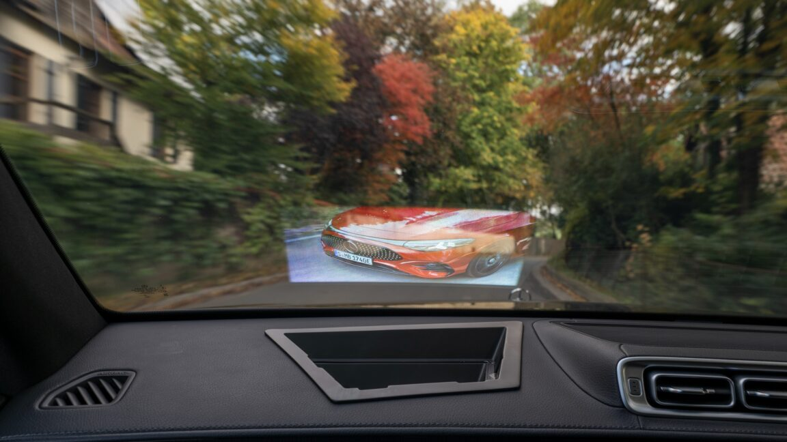

for DC Advanced UX Team.Vivi · Yohan · Libby · Lim Jisu · Katey · Anna
Latest News

Cockpit
Windshield: a film only one seat can see
At Sindelfingen a pre-2027 S-Class hides a prototype projector in a rough hole in the dash. A clear film in the windshield, holographic optical elements that engineer Lena Hees calls super-small mirrors, throws back only the projector's light. The picture holds in sun and only from one seat, so a passenger clip never reaches the driver. The frame is still short, contrasty and bent by the glass. A production box could sit behind wood.
진델핑겐의 2027년 이전 S-Class는 대시보드의 거친 구멍 안에 시제품 프로젝터를 숨긴다. 앞유리의 투명 필름은 홀로그래픽 광학 소자로, 엔지니어 레나 헤스는 아주 작은 거울이라 부른다. 프로젝터의 빛만 되돌리므로 햇빛 속에서도 보이고, 한쪽 좌석에서만 보인다. 동승석 영상은 운전자에게 닿지 않는다. 화면은 아직 낮고 대비가 세며 유리 각도에 꺾인다.
Blinkink's Stevie Gee and Essy May set Let's Get Fuzzy in a cabin. Friends meet a yeti, Gus, and a sweater turns the intruder into a guest. Six people spent more than 2,000 hours across six and a half weeks on three cabins at different scales and 400 miniature trees. Animator Andy Biddle touched the tiny clothes in every frame, a boil that keeps knit and hair alive. Four hours of filming make one second. The spot looks back at Clayman, Levi's 1995 claymation commercial, and went out on 2 November.
Blinkink的Stevie Gee和Essy May把Let's Get Fuzzy放进一座小木屋。朋友们遇见雪人Gus，一件毛衣让闯入者变成客人。六个人用六个半星期、超过2000小时，做了三个不同比例的木屋和400棵微缩树。动画师Andy Biddle每一帧都去碰那些小衣服，这种boiling让针织和毛发一直在动。四小时拍摄换一秒钟，11月2日播出。
블링크잉크의 스티비 기와 에시 메이는 Let's Get Fuzzy를 오두막에 놓았다. 친구들이 예티 거스를 만나고, 스웨터가 침입자를 손님으로 바꾼다. 여섯 사람이 6주 반, 2,000시간 넘게 작업해 오두막 세 채와 나무 400그루를 만들었다. 애니메이터 앤디 비들은 작은 옷을 매 프레임 만졌다. 이 보일링이 니트와 털을 살아 있게 둔다. 촬영 네 시간이 1초이고, 11월 2일 나갔다.
Porsche Digital Interaction, the screen language of the Cayenne Electric, now reaches newly built 911, Taycan, Panamera and Cayenne cars. The middle of the display is a 3D car you can spin, finished in that vehicle's own exterior colour, and a tap on it opens selected functions. Five themes and widgets you can rearrange sit around the model. Navigation Plus draws a 3D map. Voice Pilot, on a large language model, accepts a follow-up. The chip is up to five times the previous PCM.
Cayenne Electric上的Porsche Digital Interaction，来到新下线的911、Taycan、Panamera和Cayenne。屏幕中央是一辆可以旋转的3D车，漆成这台车真实的外饰颜色，点它就能打开选定功能。周围是五种主题和可重排的小组件。Navigation Plus画出3D地图。基于大语言模型的Voice Pilot能接住追问。新芯片最高到上一代PCM的五倍。
카이엔 일렉트릭의 화면 언어인 포르쉐 디지털 인터랙션이 새로 생산되는 911, 타이칸, 파나메라, 카이엔으로 들어온다. 한가운데는 돌릴 수 있는 3D 자동차이고, 그 차의 실제 외장 색이다. 모델을 누르면 기능이 열린다. 다섯 테마와 다시 배치하는 위젯이 주변을 채운다. 내비게이션 플러스는 3D 지도를 그린다. 대형 언어 모델 위의 보이스 파일럿은 이어지는 질문을 받는다.
Seoul artist Moho, from mohohada, to be ambiguous, turns dreams posted through a form into short videos. A mermaid gives away one scale and weeps gemstones. Dream of a Little Seahorse is a jewelled animal in pearly pink and yellow, rising from crystal water into a blue sky, while a smaller one floats between sharp-toothed fish. Glass, tulle, fur and sequins are tried until the material matches the dream. AI is a studio tool, used so the trick disappears.
首尔的Moho名字来自韩语mohohada，意思是含糊。表单寄来的梦被做成短片。美人鱼送出一片鳞，然后哭出宝石。Dream of a Little Seahorse是一条珠光粉黄的宝石海马，从水晶水带升进蓝天，更小的一只漂在尖牙鱼之间。玻璃、薄纱、毛皮和亮片要试到材质对上那个梦。AI是工作室里的工具，用完之后手法应当消失。
서울의 모호는 모호하다, 애매하다는 말에서 이름을 가져왔다. 양식으로 들어온 꿈을 짧은 영상으로 바꾼다. 인어는 비늘 한 장을 건넨 뒤 보석을 울어 낸다. Dream of a Little Seahorse는 진주빛 분홍과 노랑의 보석 해마다. 수정에서 푸른 하늘로 오르고, 더 작은 한 마리는 날카로운 이빨 사이에 뜬다. 유리와 튤, 스팽글을 꿈에 맞을 때까지 고른다.
Sparseal's CozyBlanket Pro is not a bigger CozyBlanket. It is a separate Windows and macOS app, with its own file. The model watches the high-poly and the low-poly and, while you work, offers quads, poles and a rerouted edge loop. Seams and UVs are edited in the viewport, and thousands of islands pack on the GPU. Bakes include vertex colour, normals and ambient occlusion, UDIMs included. Sparseal says every model runs on the computer and offline. The download is free. Saving and export need a licence.
스파세알의 코지블랭킷 프로는 커진 코지블랭킷이 아니다. 형식이 다른 윈도우와 맥OS 앱이다. 모델은 하이폴리와 로우폴리를 보고 쿼드, 폴, 다시 돌린 엣지 루프를 제안한다. 솔기와 UV는 뷰포트에서 고치고, 수천 아일랜드는 GPU로 패킹한다. 버텍스 컬러, 노멀, 앰비언트 오클루전을 굽고 UDIM도 된다. 모델은 기기 안에서 오프라인으로 돈다. 저장과 익스포트에 라이선스가 필요하다.
Beno Raistrick, studying games art in Bournemouth, paints textures in watercolour because it is quick and already stylised, then scans them into Krita. Levels come first. A clone-stamp makes a tile, or the sheets squeeze into an atlas. He models before he paints, so a crooked window is painted crooked, and he skips normal maps: modelled bricks have to sell the wall. In Unreal a low sun and a shallow depth of field turn the coastal town into a tilt-shift miniature.
본머스에서 게임 아트를 공부하는 베노 라이스트릭은 수채로 텍스처를 그린다. 빠르고 이미 양식화되어 있어서다. 스캔은 크리타로 간다. 레벨을 맞춘 뒤 클론 스탬프로 타일을 만들거나 아틀라스로 모은다. 모델링을 먼저 하므로 비뚤어진 창은 비뚤게 그린다. 노멀 맵은 쓰지 않고, 모델링한 벽돌이 벽을 설득한다. 언리얼의 낮은 태양과 얕은 심도가 해안 마을을 틸트시프트 모형으로 만든다.
Merijn Hos art-directs Down the Rabbit Hole and draws the Dutch festival's identity from one idea a year. For 2026 the plants bloom, then the flowers leave the stem and turn into animals instead of dying back. Stills and the motion piece share that drawing. He describes fragile things becoming resilient, ideas moving the way seeds do. He is director and animator. The branding was on the site this summer. STASH posted the reel on 2 November.
Merijn Hos是Down the Rabbit Hole的艺术指导，每年用一个念头做这届荷兰音乐节的视觉。2026年，植物开花之后，花不凋谢，而是离开茎，变成动物。静帧和动画用的是同一张画。他说脆弱的东西会变得有韧性，念头像种子一样移动。他兼任导演和动画。这套视觉夏天已经用在现场。STASH在11月2日放出了成片。
메리인 호스는 다운 더 래빗 홀의 아트 디렉터이고, 매년 하나의 생각으로 이 네덜란드 페스티벌의 아이덴티티를 그린다. 2026년에는 식물이 핀 뒤 꽃이 시들지 않는다. 줄기에서 떠나 동물이 된다. 스틸과 모션은 같은 그림을 쓴다. 그는 약한 것이 회복력을 얻고, 생각이 씨앗처럼 이동한다고 말한다. 연출과 애니메이션은 그의 몫이다. 브랜딩은 이번 여름 현장에 이미 있었다. STASH는 11월 2일 릴을 올렸다.
Aegis Rider Vision is a carbon Nexx X.WST3. A magnetic AR Optics module behind the visor draws 1080p to each eye and weighs 75 grams. A chin camera watches the bike while helmet sensors read a head turn, so arrows stay locked to the machine and step aside when you look away. A rigid phone mount, or a Pro-Box, supplies motion. Setup is a 10-minute ride and two hours of processing. After dark, Static Mode pins the graphics in view. Helmet and optics are $1,999. Fitting them leaves the shell outside ECE 22.06.
Hiren Patel, senior design manager at Nissan, describes years when piano black and a switchless cabin looked clean in the showroom and sent eyes into menus. The new Rogue Hybrid keeps buttons and switches for most controls, and the piano-black panels are gone. Seat quilting comes from a puffer jacket. Rear doors open to 90 degrees. Storage starts as a door opens, for a family travelling with a lot of things. The cabin is drawn for every day, and still argued over by the millimetre.
닛산 시니어 디자인 매니저 히렌 파텔은 피아노 블랙과 스위치 없는 실내가 전시장에서는 단정했지만, 도로에서는 시선을 메뉴로 보냈다고 말한다. 새 로그 하이브리드는 대부분의 조작을 버튼과 스위치에 두고, 피아노 블랙은 없다. 시트 퀼팅은 패딩 재킷에서 왔다. 뒷문은 90도까지 열린다. 문이 열리면 수납이 시작된다. 이 실내는 매일 쓰라고 그렸고, 밀리미터는 아직 다툼 중이다.
Shaun Wellens' P1 Terminal is a CGI computer for a fictional 1970s firm, Push / Pull, meant for people sharing one underground room. The off-white clamshell borrows its hinge from the GRiD Compass that flew on Columbia in 1983. The lid shows cyan-green text: a pixel hello, then a numbered list of mail and boards, plus a camera notch that does not belong in 1972. A blue trackball sits mid-keyboard so either hand can reach it. A jointed arm swings the pod down from the ceiling.
숀 웰렌스의 P1 터미널은 1970년대 가상 회사 푸시 / 풀의 CGI 컴퓨터다. 지하 방 하나를 나눠 쓰는 기계다. 아이보리 클램셸의 경첩은 1983년 컬럼비아호에 실린 그리드 컴퍼스에서 왔다. 덮개 안은 청록 글자다. 픽셀 hello 다음 우편과 게시판의 번호 메뉴, 그리고 1972년에 있을 수 없는 카메라 노치가 있다. 파란 트랙볼은 키보드 한가운데라 어느 손이든 닿는다. 관절 팔이 포드를 천장에서 내린다.
On the same research cars, Mercedes is laminating LEDs into the glass. Mini LEDs suit a large pane, the rear window among them: a brake light, a warning symbol, a note for the driver behind, and only while it is needed. Micro LEDs, denser, are for smaller areas and short animations. With nothing to show, the elements in the laminate are meant to sink back into the glass, so the window does not wear a black mask. The windshield hologram is the inward picture. This one faces the road behind the car.
같은 연구 차량에서 메르세데스는 LED를 유리 안에 적층한다. 미니 LED는 넓은 면에 맞다. 뒷유리도 그 하나다. 브레이크등, 경고 기호, 뒤차에게 주는 표시가 필요할 때만 나온다. 더 촘촘한 마이크로 LED는 작은 면과 짧은 애니메이션용이다. 보여줄 것이 없으면 소자는 유리 속으로 돌아가, 창에 검은 마스크가 남지 않는다. 앞유리 홀로그램은 실내를 향하고, 이쪽은 차 뒤의 길을 향한다.
M2ky's BGEN Hair, for Blender 4.5 and later, replaces BGEN Groom, Flow and Card and still opens those files. Parting lines are drawn on the scalp. Comb strokes set direction. A Braids and Locs panel and a taper around the ears sit beside presets on dials. Light guides fall under gravity while full strands follow live in the viewport. The same grower makes feathers, scales, beads and grass. Eight 2K hair-card sets and a paintable shader are for game engines.
M2ky의 BGEN 헤어는 블렌더 4.5 이후용이다. BGEN 그룸, 플로, 카드를 대신하고 그 파일도 연다. 가르마는 두피에 그린다. 빗질이 방향을 정한다. 브레이드와 록스 패널, 귀 주변 테이퍼 옆에 다이얼 프리셋이 있다. 가벼운 가이드는 중력에 떨어지고, 전체 가닥은 뷰포트에서 실시간으로 따라간다. 같은 그로워로 깃털, 비늘, 구슬, 풀도 자란다. 2K 헤어 카드 여덟 세트와 칠하는 셰이더는 게임 엔진용이다.
At Ars Electronica 2026 in Linz, Adrien Lucca worked with Ali Aiman Raza, Colas Schretter and biologist Marko Ilić. Living plants sit under LEDs tuned toward the elephant hawkmoth, Deilephila elpenor, which still sorts colour in starlight and sees into ultraviolet. Under the blue cast, leaves go brown or nearly black and the flowers step forward. People cannot see that ultraviolet, so red stood in for it in earlier drawings. The plants never move. Only the wavelengths change.
2026년 린츠 아르스 일렉트로니카에서 아드리앵 루카는 알리 아이만 라자, 콜라 슈레터, 생물학자 마르코 일리치와 작업했다. 살아 있는 식물이 LED 아래에 있고, 스펙트럼은 코끼리 박각시나방 데일레필라 엘페노르를 향한다. 이 나방은 별빛에서도 색을 가르고 자외선까지 본다. 푸른 빛에서 잎은 갈색이나 거의 검정이 되고 꽃은 앞으로 나온다. 사람은 자외선을 못 봐서 이전 그림은 빨강으로 대신했다. 식물은 움직이지 않는다.
Elie N'Guessan, from Peckham, started photographing while studying product design at Central Saint Martins. After a shoot he prints and scans, so paper dust stays in the file. Dobs on the Back Seat, a spec for Adidas, packs tracksuits into a car doorway against a coral wall, three stripes in the corner. Daycare's Over was booked as two models. Four children walked over, the crossbar became the set, and the models played tired staff against blue brick.
佩卡姆的Elie N'Guessan在中央圣马丁读产品设计时开始拍照。拍完他把照片印出来再扫描，纸上的灰尘留在文件里。给阿迪达斯的试拍Dobs on the Back Seat，把运动套装塞进车门，后面是珊瑚红的墙，角落是三条杠。Daycare's Over本来只约了两个模特。四个孩子走过来，门梁成了布景，模特扮演疲惫的工作人员，背后是蓝砖。
페컴의 엘리 은게산은 센트럴 세인트 마틴스에서 제품 디자인을 공부하며 사진을 시작했다. 촬영 뒤 인화했다가 다시 스캔해서 종이 먼지가 파일에 남는다. 아디다스 스펙 Dobs on the Back Seat는 트레이닝복을 차 문에 넣고, 뒤에는 산호색 벽, 구석에 세 줄이 있다. Daycare's Over는 모델 둘이었다. 아이 넷이 왔고, 크로스바가 세트가 됐으며, 모델은 파란 벽돌 앞의 지친 직원이 됐다.
All Intensive Purposes, at Friedman Benda in New York, marks ten years of Misha Kahn with the gallery. Upholstery begins as a painting, is woven into wool by JG SWITZER, then cut back into that composition, so colour follows cushions that do not quite meet. Frames are welded so the outline can bend. He likes the air between cushions. Throws of Passion is a marble console carved until it looks like draped cloth. A small lazy river circles the room beside a video of making and unmaking.
纽约Friedman Benda的All Intensive Purposes，是Misha Kahn与画廊合作的第十年。软包先是一幅画，由JG SWITZER织成羊毛，再按原构图裁回去，颜色跟着并不完全挨上的坐垫走。框架在工作室焊接，轮廓才能弯。他喜欢坐垫之间的那口气。Throws of Passion是一张大理石案，刻到像垂下的布。一条小懒人河绕着展厅，旁边的影像把材料拆开再装上。
뉴욕 프리드먼 벤다의 All Intensive Purposes는 미샤 칸이 갤러리와 함께한 10년이다. 업홀스터리는 그림에서 시작해 JG SWITZER가 울로 짜고, 그 구성을 다시 재단한다. 색은 완전히 닿지 않는 쿠션을 따라간다. 프레임은 작업실에서 용접해 윤곽이 휜다. 그는 쿠션 사이의 공기를 좋아한다. Throws of Passion은 천처럼 깎인 대리석 콘솔이다. 작은 레이지 리버가 방을 돌고, 영상은 재료를 뜯었다가 다시 붙인다.
Peiyang (Camille) Li's She Blooms in the Dark is a woven bamboo armchair that curves around a sitter and stops short of a closed booth. Hand-crocheted flowers cover the lattice. The yarn is phosphorescent: it stores daylight and returns a low glow in the dark, with no LED and no battery in the flowers. No size, price or measured brightness is published, so the light stays atmosphere, not a reading lamp. The flower is the fixture.
Peiyang（Camille）Li的She Blooms in the Dark是一把竹编扶手椅，弯过来包住坐的人，但没有收成封闭的小间。手钩的花盖在格栅上。纱线会蓄光：白天吸进日光，房间暗下来就放出低亮度的光，花里没有LED，也没有电池。尺寸、价格和亮度都没有公布，所以这光是气氛，不是阅读灯。花本身就是灯具。
페이양(카미유) 리의 She Blooms in the Dark는 대나무로 짠 안락의자다. 앉은 사람을 감싸지만 닫힌 부스까지는 가지 않는다. 손뜨개 꽃이 격자를 덮는다. 실은 축광이라 낮의 햇빛을 저장했다가 어두워지면 낮은 빛으로 돌려준다. 꽃 안에는 LED도 배터리도 없다. 크기와 가격, 밝기는 공개되지 않았다. 빛은 분위기이고 독서등이 아니다. 꽃 자체가 조명이다.